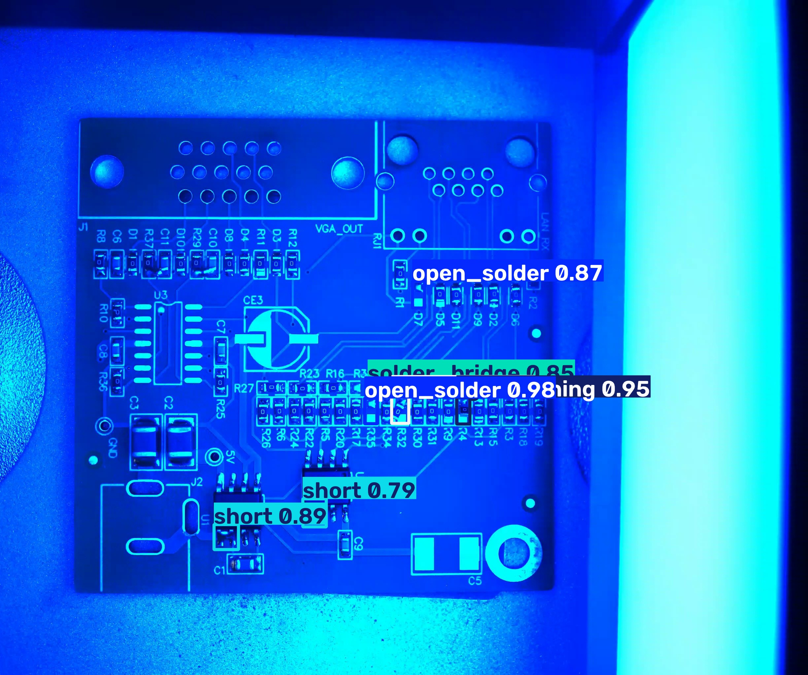
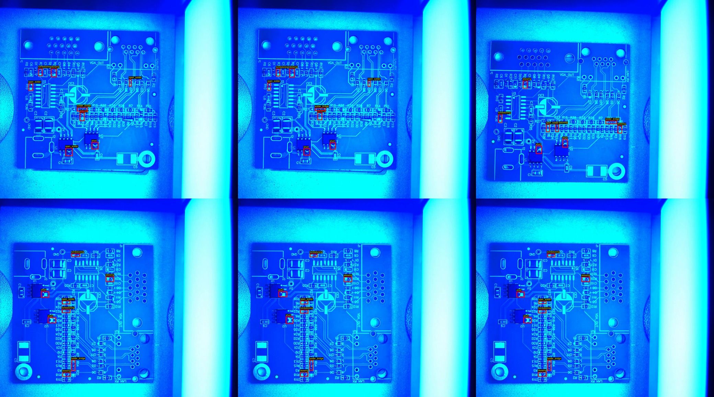
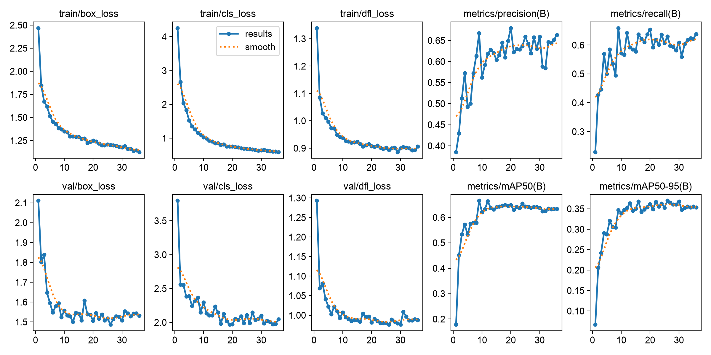
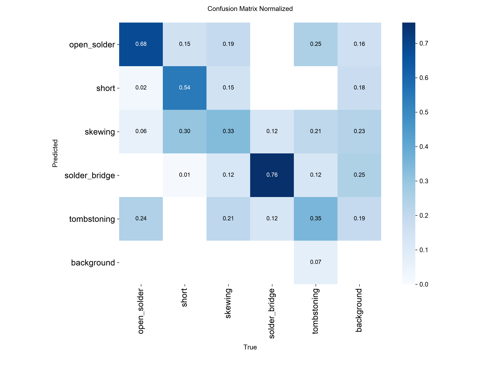
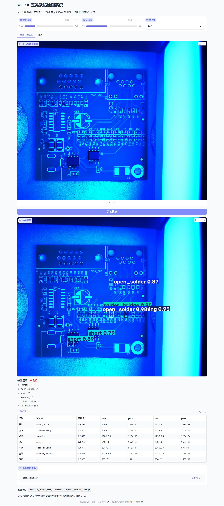

INDUSTRIAL AI · OBJECT DETECTION
PCBA 五类缺陷检测
YOLOv8 全流程落地
从 600 张 PCBA 图片和 VOC 标注出发，完成数据审计、模型训练、独立测试、ONNX 导出与可交互网页演示。模型在测试集达到 87.94% mAP50。

01 / DATA
数据先体检，再训练
数据集包含 600 张 2448 × 2048 图像、600 个 XML 标注、4552 个目标框，覆盖开焊、短路、偏移、连锡和立碑五类缺陷。
自动亮度分析显示全量平均灰度位于 98.01–123.18，处于设定的 60–200 正常范围。项目没有为了“看起来做了预处理”而强行修改图像。
| 类别 | 目标数 |
|---|---|
| short / 短路 | 1119 |
| open_solder / 开焊 | 1080 |
| tombstoning / 立碑 | 880 |
| skewing / 偏移 | 873 |
| solder_bridge / 连锡 | 600 |

02 / PIPELINE
完整工程链路
数据校验
图片与 XML 配对、尺寸、类别和边界框检查，转换为 YOLO 格式。
YOLOv8n 训练
960 输入、batch 2、早停与在线增广，保留验证集和测试集边界。
独立评估
训练结束后评估 150 张测试图，输出总体与逐类别指标。
部署交付
导出 ONNX，提供 CLI、Gradio、CSV 明细和自动化测试。
03 / RESULTS
用独立测试集说话
| 类别 | Precision | Recall | mAP50 | mAP50-95 |
|---|---|---|---|---|
| open_solder | 74.15% | 54.59% | 82.07% | 52.89% |
| short | 99.64% | 100.00% | 99.50% | 57.27% |
| skewing | 99.55% | 73.91% | 80.54% | 58.01% |
| solder_bridge | 100.00% | 82.73% | 99.03% | 48.75% |
| tombstoning | 97.57% | 75.86% | 78.57% | 48.75% |


主要短板
open_solder 的 Recall 只有 54.59%，漏检仍是最突出的问题；验证集和测试集指标差异较大，也说明固定编号划分可能包含批次差异。
04 / DEPLOYMENT
从权重到可演示系统
项目提供统一的 pcba CLI，以及支持图片、视频和摄像头的 Gradio 页面。推理输出包含检测框、类别统计、合格判定和 CSV 明细。
pcba prepare
pcba analyze
pcba train --config configs/train_cpu.yaml
pcba eval --split test --imgsz 960
pcba export --output models/pcba_yolov8n.onnx
pcba app --host 127.0.0.1 --port 7860GitHub Pages 展示项目文档与结果；Gradio 交互服务需要 Python/CPU 运行时，不能直接托管在 Pages 上。

05 / DOWNLOADS